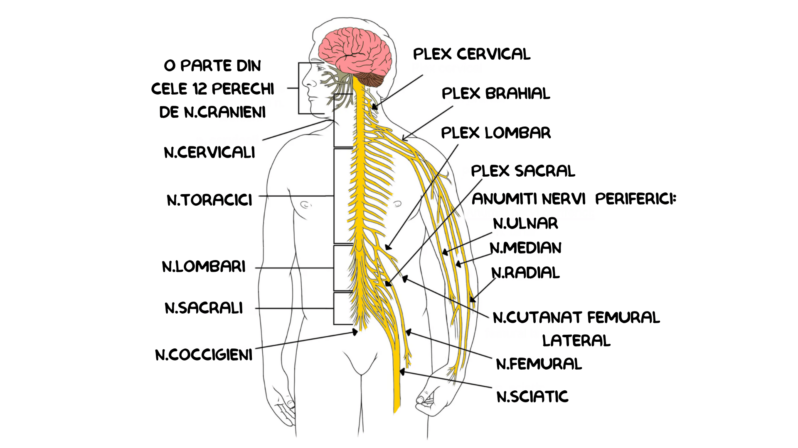

Controlează activitățile corpului și răspunde la stimuli.
Sistemul nervos este sistemul de conducere și coordonare al organismului uman. El recepționează, prelucrează și transmite informații, controlând activitățile organismului și asigurând adaptarea la mediu. Este alcătuit din țesut nervos și include creierul, măduva spinării și nervii.
Actul reflex stă la baza funcționării sistemului nervos și reprezintă răspunsul organismului la acțiunea unui stimul. Este un proces automat, rapid și involuntar, declanșat de un stimul și finalizat cu un răspuns precis.
Arcul reflex este baza anatomică a actului reflex și este alcătuit din:
Schema:
STIMUL → RECEPTOR → cale aferentă senzitivă → CENTRU NERVOS → cale eferentă motorie → EFECTOR
Măduva spinării are rol de centru nervos reflex, prin substanța cenușie care coordonează reflexe:
Encefalul este componenta principală a sistemului nervos central și este alcătuit din:
Este continuarea măduvei spinării și conține:
Structură:
Nuclei:
🔗 Conectat la nervii cranieni
🧠 Arii corticale:
📚 Reflexele condiționate sunt:
| Boală | Cauze | Manifestări | Prevenire |
|---|---|---|---|
| Boala Parkinson |
|
|
|
| Paralizia |
|
|
|
| Epilepsia |
|
|
|
| Scleroza în plăci |
|
|
|